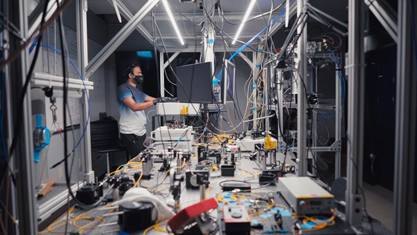

Featured Article
Quantum Leap: Breakthrough in Teleportation Technology by Alexander Carter
In a monumental leap forward for science and technology, researchers at the European Organization for Nuclear Research (CERN) have announced a groundbreaking breakthrough in teleportation technology, paving the way for a new era of instant transportation. Building upon decades of research in quantum mechanics and particle physics, the team of scientists at CERN's Large Hadron Collider (LHC) has successfully achieved the first-ever teleportation of a macroscopic object—a small diamond—over a distance of several meters. Dr. Sophia Alvarez, lead researcher of the Teleportation Project, described the achievement as "a paradigm shift in our understanding of quantum mechanics and its practical applications." She added, "Teleportation has long been the realm of science fiction, but today, we have turned it into science fact." The breakthrough relies on the principles of quantum entanglement, a phenomenon in which particles become interconnected in such a way that the state of one particle instantly affects the state of another, regardless of the distance between them. By harnessing this quantum phenomenon, the researchers were able to transfer the quantum state of the diamond from one location to another instantaneously. "The key to successful teleportation lies in preserving the delicate quantum state of the object while transmitting it across space," explained Dr. Thomas Müller, a physicist involved in the project. "Our method ensures that the quantum information remains intact throughout the teleportation process, allowing for precise reconstruction at the destination." The implications of this breakthrough are profound and far-reaching. Beyond revolutionizing the field of transportation, teleportation technology has the potential to reshape industries ranging from logistics and manufacturing to healthcare and space exploration. Imagine being able to instantly transport goods across the globe, perform remote surgeries with unparalleled precision, or explore distant planets without the need for spacecraft. While the practical applications of teleportation technology are still in the early stages of development, the scientific community is optimistic about its potential to usher in a new era of innovation and discovery. As researchers continue to refine the technology and explore its capabilities, the dream of teleportation as a routine mode of transportation may soon become a reality. As the world marvels at this extraordinary feat of human ingenuity, one thing is certain: with each quantum leap forward, humanity edges closer to unlocking the mysteries of the universe and harnessing the power of science to shape a better tomorrow.
Quantum mechanics, a cornerstone of modern physics, revolutionized our understanding of the universe at its most fundamental level. It delves into the behavior of particles at subatomic scales, where classical physics fails to apply. Quantum mechanics introduces concepts like superposition, where particles can exist in multiple states simultaneously, and entanglement, where particles become interconnected regardless of distance. These principles underpin technologies such as quantum computing and cryptography, promising unprecedented computational power and secure communication. Yet, quantum mechanics remains enigmatic, challenging our intuitions and prompting ongoing debate about its implications for reality, consciousness, and the very nature of existence. Furthermore, quantum mechanics reveals a probabilistic nature, where outcomes are inherently uncertain until measured, leading to the famous Schrödinger's cat paradox. The theory's mathematical formalism, primarily expressed through wave functions and operators, has proven remarkably accurate, predicting phenomena such as quantized energy levels in atoms and the behavior of subatomic particles. Despite its success, quantum mechanics presents philosophical puzzles, including the role of observers in collapsing wave functions and the interpretation of parallel universes in the many-worlds theory. As scientists delve deeper, quantum mechanics continues to challenge our understanding of reality, inspiring curiosity and awe at the mysteries of the quantum realm.
Latest News
Bunny Bonanza: Record-Breaking Bunny Gathering Captivates Community by Emily Anderson
In an adorable spectacle that warmed hearts and brought smiles to faces, Meadowvale Park played host to a record-breaking bunny gathering, delighting residents and visitors alike with the charm and cuteness of these furry creatures. Organized by the Meadowvale Community Center in collaboration with local bunny enthusiasts, the event aimed to celebrate the beloved companionship of bunnies while raising awareness about responsible pet ownership and animal welfare. Under the gentle rays of the morning sun, families from across the community gathered in the park, each accompanied by their fluffy, hoppy companions. From Holland Lops to Flemish Giants, bunnies of all shapes, sizes, and colors mingled and frolicked in the grassy meadows, creating a scene straight out of a storybook. "It's wonderful to see so many people coming together to celebrate the joy that bunnies bring into our lives," remarked Sarah Thompson, a longtime resident and bunny enthusiast. "They're such gentle and affectionate creatures, and events like this help highlight the importance of treating them with love and care." As the day progressed, the park buzzed with activity as attendees participated in a variety of bunny-themed games and activities, including bunny hop races, carrot toss competitions, and even a bunny costume contest. Children giggled with delight as they interacted with the fluffy attendees, petting them gently and feeding them treats under the watchful eyes of their owners. "It's amazing to see the bond between bunnies and their human companions," said Dr. Robert Johnson, a local veterinarian who volunteered his services at the event. "Bunnies are highly social animals that thrive on interaction and companionship, and events like this provide valuable opportunities for them to socialize and play." In addition to the festivities, the event also served as a platform for local animal shelters and rescue organizations to raise awareness about bunny adoption and responsible pet ownership. Representatives from these organizations were on hand to provide information and resources to prospective bunny owners, emphasizing the importance of proper care, nutrition, and veterinary attention for these beloved pets. As the sun began to set on Meadowvale Park, casting a warm golden glow over the gathered crowd, attendees bid farewell to their furry friends, their hearts full of fond memories and their spirits lifted by the joyous atmosphere of the day. As they dispersed, carrying with them the happiness and warmth of the Bunny Bonanza, they looked forward to future gatherings and the opportunity to celebrate the wonderful world of bunnies once again.